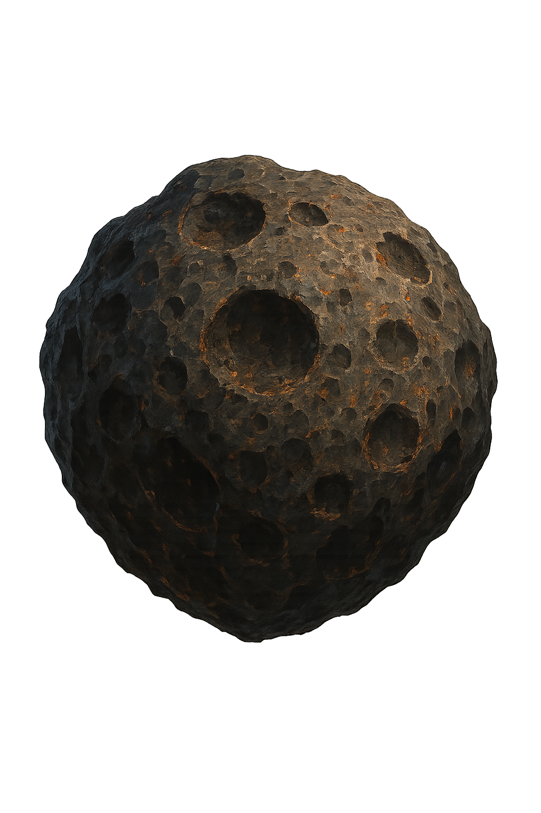
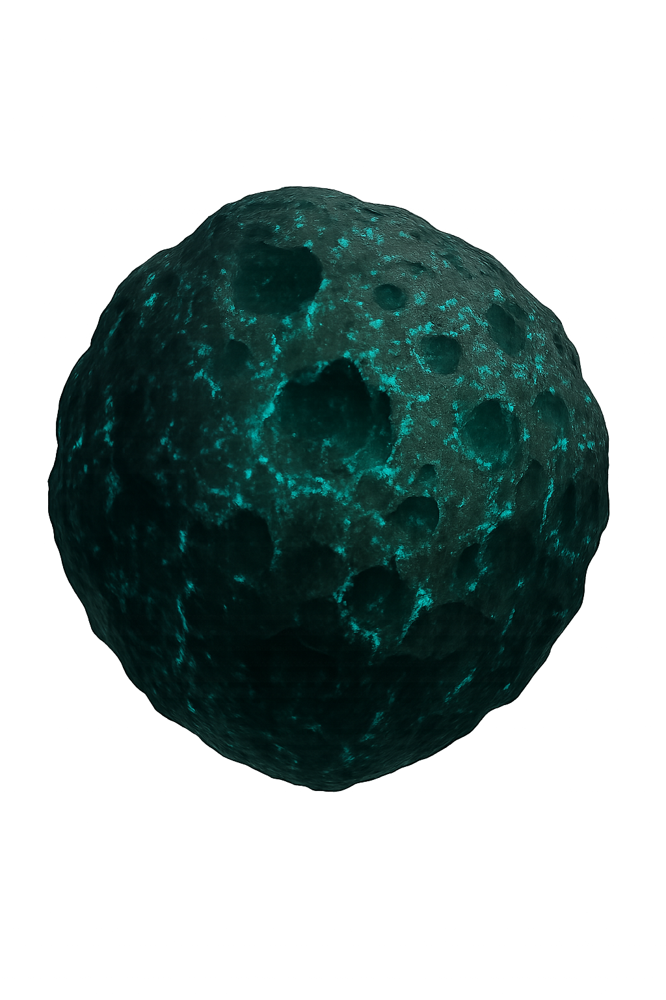
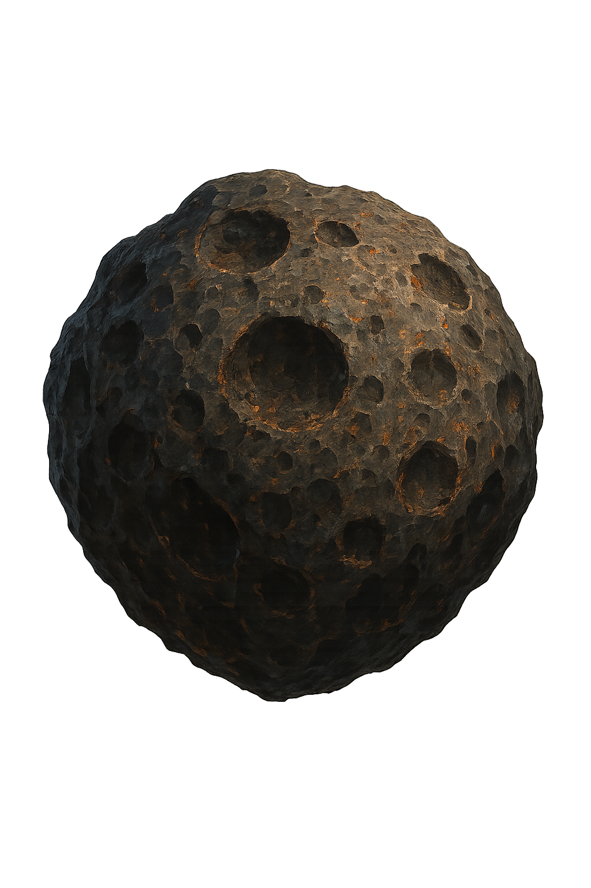
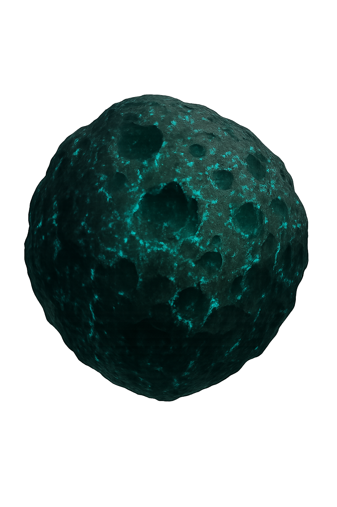
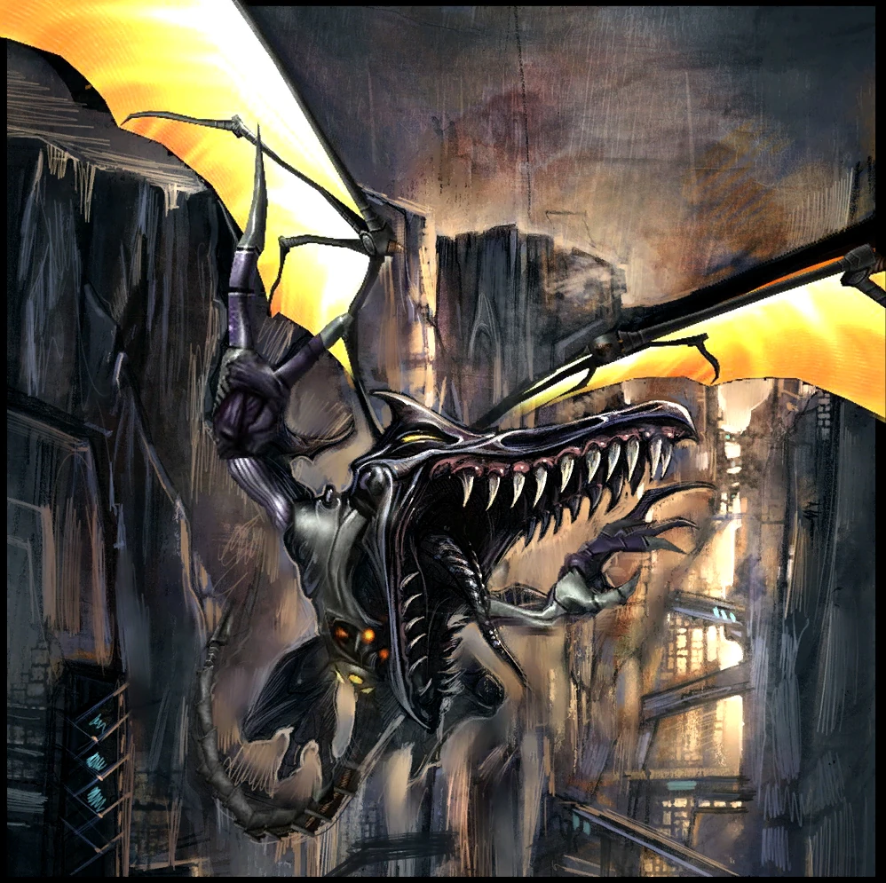

Gefahrenanalyse: Bossgegner
Tallon IV beheimatet tödliche Kreaturen.im nachfolgenden kommen einige von ihnen
Thardus

Thardus, eine riesige, golemartige Lebensform, ist eine experimentelle Waffe der Weltraumpiraten und in den Tiefen der Phendranischen Eiswüste zu finden.
Parasite Queen

Die Parasite Queen ist der erste Boss in Metroid Prime. Sie ist größtenteils unbeweglich, kann sich nur drehen, um dich anzugreifen, und wird durch Energieschilde geschützt. Bevor du das Feuer eröffnest, solltest du sie scannen, da sie nicht noch einmal auftaucht. Der Kampf ist sehr unkompliziert: Feuere einfach mit deinem Kanonensalven durch die Lücken im Schild, um Schaden zu verursachen. Am besten bleibst du auf sie aufgeschaltet und weichst schnell seitlich aus, um dich mit den Lücken auszurichten
Hive Mecha

Hive Mecha ist der zweite Boss in Metroid Prime. Der Hive Mecha greift dich nicht direkt an – stattdessen schützt er sich, indem er Ram War Wasps auf dich hetzt. Diese Wespen greifen dich an und können dich direkt verletzen oder dich in das giftige Wasser stoßen, was zusätzlichen Schaden verursacht. Am besten besiegst du die Wespen, indem du stillstehst, manuell zielst und deinen Blaster spamst, solange sie in Bewegung sind, und den Lock-on benutzt, wenn sie stillstehen. Sobald sie erledigt sind, enthüllt der Hive Mecha seine Schwachstelle, während er eine neue Welle vorbereitet. Es ist ein riesiges rotes Licht, also ein leichtes Ziel. Achte nur darauf, es sofort abzuschießen, da es schnell wieder verschwindet. Wenn du alle vier Schwachpunkte zerstört hast, kannst du den Raketenwerfer auf der Brücke einsammeln.
Incinerator Drone

Der Incinerator Drone ist der dritte Boss in Metroid Prime. Wie die ersten beiden Bosse ist auch der Incinerator Drone eine stationäre Nervensäge. Die Maschine greift dich mit rotierenden Flammenwerfern an, denen du durch Springen ausweichen musst. Vergiss nicht, ihn zu scannen, um mehr Informationen über seine Schwachpunkte zu bekommen (und um deinem Scan-Fortschritt näherzukommen). Nachdem du den Flammen eine Weile ausgewichen bist, öffnet sich die Drohne und legt eine Schwachstelle frei (sie leuchtet rot – du erkennst sie sofort). Feuere darauf, und du zwingst die Drohne dazu, ihren Feuerstrahl in die Decke zu schießen, was einen Schwarm Barbed War Wasps hervorruft. Jedes Mal, wenn das passiert, wird ein Teil des Nests zerstört. Also: Schieße die Wespen ab, weiche den Flammen aus und bearbeite den Kern, bis du sie besiegt hast und deine Belohnung bekommst – die Morph Ball Bomb.
Flaahgra

Diese gefährliche Pflanze ist ein weiterer stationärer Boss, aber sie kann mit ihren Klauen nach dir schlagen und sogar eklige, verhedderte Pflanzenmasse auf dich schießen. Starte damit, sie zu scannen, um ihre Schwachstelle zu entdecken: Sie braucht Sonnenlicht. Da sie von giftigen Wasserbecken umgeben ist, solltest du dich immer auf dem Steg rund um die Pflanze bewegen. Deine Aufgabe ist es, die Pflanze vom Sonnenlicht abzuschneiden und sie dann mit einer Bombenattacke zu verletzen. Dazu musst du die Pflanze anvisieren und mit deinem Kanonenschuss betäuben. Renn anschließend so schnell wie möglich zu dem nächstgelegenen Solarpanel, das auf die Pflanze ausgerichtet ist. Nutze den Morph Ball oder lauf normal hin, stell dich hinter das Panel, visiere es an und zerstöre die Basis mit einem Schuss, um es zu deaktivieren. Sobald die Pflanze kein Sonnenlicht mehr erhält, bricht sie zusammen, und ein Morph-Ball-Tunnel öffnet sich direkt zu ihr. Rolle hinein, geh nah ran und lege eine Morph Ball Bombe, um Schaden zu verursachen.
Sheegoth

Sheegoth ist der fünfte Boss in Metroid Prime. So besiegst du sie: Der Wave Beam liegt mitten in der Arena – was natürlich zu schön ist, um wahr zu sein. Sobald du versuchst, ihn zu holen, sinkt er in den Boden darunter, und vier Baby-Sheegoths stürmen fauchend in den Raum. Besi ege alle vier, und sobald du fertig bist, bricht Mama-Sheegoth durch die hintere Wand. Scanne sie zuerst. Danach visiere sie an und bewege dich seitwärts nach rechts und links. Verwende nicht den Power Beam – Sheegoth absorbiert ihn und schleudert die Energie als Schüsse zurück. Stattdessen geh nah genug ran, bis sie ihren Eisstrahl abfeuert. Löse dann sofort das Lock-on, ziele schnell auf ihren Hals oder ihr Maul (von einer Seite aus) und feuere Raketen ab.
Elite Pirate

Elite Piraten sind die stärksten Infanterieeinheiten der Weltraumpiraten. Sie sind schnell, wendig und mit einem Energieschild ausgestattet, das sie vor den meisten Angriffen schützt.
Omega Pirate

Schalte beim Betreten den Scan-Visor ein und lade die Daten aus ihrer Stasiskammer herunter, sobald du dich ihr näherst. Wenn du vorsichtig bist, kannst du den Scan abschließen, bevor die Zwischensequenz startet (wenn du später scannst, riskierst du, währenddessen getroffen zu werden). Der Scan verrät dir viel über ihre Taktik: Die Omega-Piratin verschwindet regelmäßig, um sich mit Phazon zu „übermalen“ und so ihre Wunden zu heilen. Genau das ist ihre Schwäche – und du wirst sie ausnutzen, um sie zu besiegen. Außerdem zeigt dir der Scan, dass sie resistent gegen Beam-Waffen ist. Das bedeutet: Verlass dich auf Raketen – besser noch: auf Super-Raketen.
Metroid Prime (Shell)

Scanne und begrüße Metroid Prime. Dieses spinnenartige Wesen ist nicht nur furchteinflößend anzusehen, sondern auch im Kampf. Prime ist unglaublich intelligent. Mit einer ständigen Phazon-Versorgung konnte es seine Kräfte über lange Zeit anpassen und verstärken. Es ist mit einem Traktorstrahl, ätzendem Atem mit Laserpräzision, Gasbomben und einer Reihe weiterer Angriffe ausgestattet. Kurz gesagt: Du musst ständig aufmerksam bleiben. Um Projektilangriffen auszuweichen, ist es oft klug, näher an Prime heranzugehen und in seiner Nähe zu bleiben. Sei aber vorsichtig – kommst du zu nah, schlägt es mit seiner Klaue nach di
Metroid Prime (Core)

Der Endkampf gegen das wahre Metroid Prime – den glibberigen Kern – ist der zweite Teil der finalen Auseinandersetzung. Nachdem die äußere, spinnenartige Hülle zerstört wurde, kriecht der Kern in eine neue Arena. Dort zeigt sich seine wahre Form: eine schleimige, pulsierende Masse, die wie ein übergroßes, mutiertes Metroid wirkt